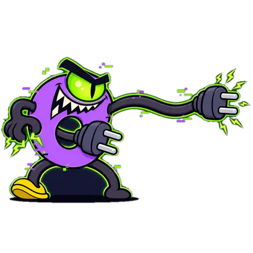
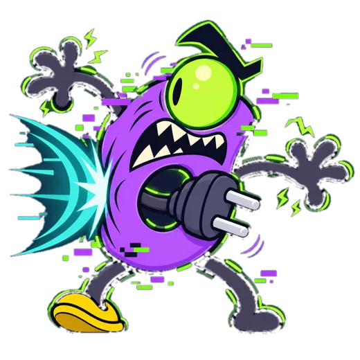
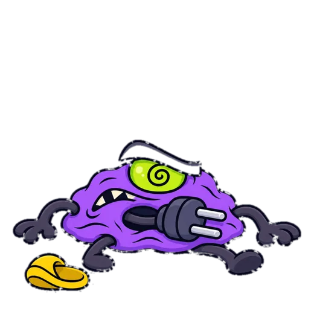
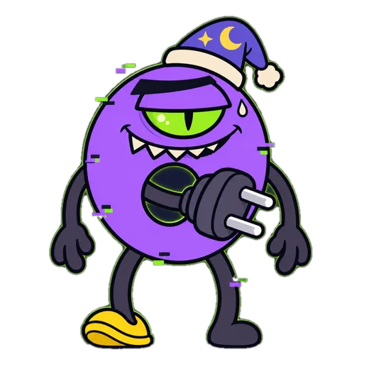
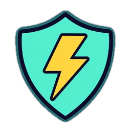

01 / АТАКАЭкран захвачен
В случайный момент звук выключается. Экран закрывает окно без крестика. БублиГлюк пришёл за примерами.
Windows 10/11 · Бесплатно · 1–3 класс
Раз в 15–20 минут БублиГлюк захватывает экран — ребёнок решает 3–4 задания, чтобы вернуться к видео.
Один exe, установка не нужна. SmartScreen может показать предупреждение.
Я отец первоклассника. Он всё время смотрит видео на ноутбуке. Воспитание детей — это тяжело, и я написал Глюкобой.
Родители девочек, возможно, меня не поймут. Родителям мальчиков софт может пригодиться: как минимум заставит порешать примеры, почти как домашка. И в игровой форме отвлечёт от ПК.
Всё это без вмешательства родителя: программа сама прерывает видео и усаживает за примеры. С вами ребёнок будет спорить, с БублиГлюком — никак.
— Автор Глюкобоя
У БублиГлюка опять свои планы.

01 / АТАКАВ случайный момент звук выключается. Экран закрывает окно без крестика. БублиГлюк пришёл за примерами.

02 / ЗАДАНИЯПрочитать фразу, собрать слово из слогов, найти лишнее слово или решить пример. Верный ответ бьёт вирус: снаряд, искры, «Два подряд!».

03 / ПОБЕДАПосле 3–4 заданий — добивающий удар, и экран снова свободен. Ошибка не наказывает: вирус контратакует, щит отбивает.
1–3 КЛАСС
В каждом классе три уровня сложности. 1 класс — «Кот мурлычет. Кто мурлычет?», 3 класс — задачи в два действия. Класс и уровень задаются в settings.ini, задания на чтение можно дописать в tasks.txt.

С 21:00 до 07:00 — экран «ноутбук перегрелся/остывает». Время можно настроить.
ОБНОВЛЕНИЯ С GITHUB
Программа обновляется через Releases. Свои настройки и задания сохраняет. Чтобы выключить обновления, укажите AutoUpdate=0.
Нужен Windows 10/11. Используется встроенный .NET Framework 4.
Glukoboy.exe.Program Files — нет.update.log будет ошибка.settings.ini и tasks.txt появятся сами, если их нет. При желании скачайте их из того же релиза.settings.ini выберите Grade и Level от 1 до 3. Для первой атаки нажмите Ctrl+Alt+B. Выход — Ctrl+Alt+Q.shell:startup и положите в открывшуюся папку ярлык на exe.Сразу после установки стоит 1 класс, уровень 1 — самые лёгкие задания.
КлассGrade | 1 |
Уровень внутри класса, 1–3Level | 1 |
Счёт в 1 классе доMathMax | 10 |
Атака каждые, минутIntervalMin / IntervalMax | 15–20 |
Заданий за атакуTaskMin / TaskMax | 3–4 |
Ночной режимNightFrom / NightTo | 21:00–07:00 |
АвтообновлениеAutoUpdate | вкл |
Тестовый режимTestMode | выкл |
settings.ini рядом с Glukoboy.exe в Блокноте.= и сохраните файл.Glukoboy.exe снова.Пример: 2 класс, второй уровень, атака раз в 30–40 минут.
; было Grade=1 Grade=2 ; было Level=1 Level=2 IntervalMin=30 IntervalMax=40
Уровень повышайте сами, когда задания решаются без ошибок. Все настройки — в README.

Глюкобой — игра, которая прерывает просмотр и заставляет немного порешать. Родительского контроля и защиты здесь нет. Ребёнок, знакомый с диспетчером задач, закроет программу.
Exe не подписан. Windows SmartScreen может предупредить о запуске. Если вы доверяете скачанному файлу: «Подробнее → Выполнить в любом случае».
Антивирус тоже может насторожиться: программа выключает звук, открывает окно поверх всего и обновляется сама. Исходники открыты, сборка — через встроенный csc.exe. Настройки и все клавиши родителя — в README.